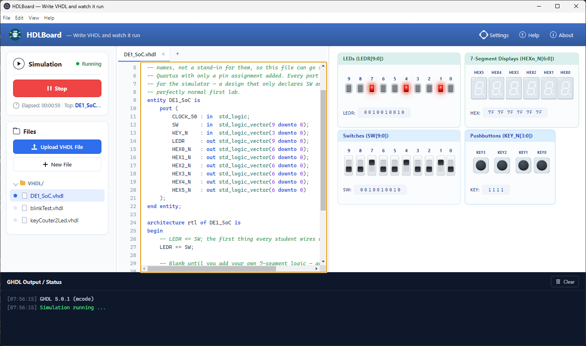

Free & open source · built for PB1180 at USN
HDLBoard
Write VHDL. Watch it run.
HDLBoard is a friendly way to get started with hardware description languages. Type real VHDL in your browser, simulate it with the open-source GHDL compiler, and watch the result play out on a virtual DE1-SoC board — flip switches, press buttons, and see the LEDs and seven-segment displays react exactly like the real hardware would.

New to FPGAs? Four terms and you're set
FPGA
A chip you rewire with code instead of a soldering iron. Rather than running instructions like a CPU, it becomes the circuit you describe.
VHDL
A language for describing digital circuits — what connects to what, and how it should behave — instead of a sequence of steps to run.
DE1-SoC
A popular FPGA development board used in many university courses, with switches, buttons, LEDs and seven-segment displays to wire up.
GHDL
A free, open-source tool that compiles VHDL and simulates it, so you can check your circuit's behavior before it ever touches real hardware.
What you get
A real VHDL editor
Write and organize VHDL files directly in your browser, with syntax highlighting that keeps your code readable as it grows.
Real GHDL simulation
Your design is compiled and simulated by GHDL itself — not an approximation — with its own console output and errors, file and line included.
A live DE1-SoC board
Clickable switches and pushbuttons, LEDs and seven-segment displays — all driven live by your simulation, exactly like the real board.
Built for learning
Multiple files per project, real-time pacing so timing behaves like it would on real hardware, and testbench report/assert output right in the console.
How it works
-
1
Write
Edit VHDL source files in the browser.
-
2
Simulate
GHDL compiles and runs your design.
-
3
Watch it respond
Results are drawn live onto the virtual board.
-
4
Interact
Flip switches and press buttons, and see the design react.
The editor runs entirely in your browser, but the actual compiling and simulating happens in a small backend service that runs GHDL for you. That's why HDLBoard needs to be installed or self-hosted, rather than running end-to-end on a page like this one.
Get started
Pick whichever fits — trying it on your own machine, or setting it up for a classroom.
Windows App
Download the installer and run it. The simplest way to try HDLBoard on your own computer.
Download the installer →Host it yourself
Run HDLBoard on Linux, macOS or WSL so a whole classroom can open it in a browser.
Read the hosting guide →Build from source
Compile the project yourself, run the dev server, or build the Windows installer.
Read the build guide →Curious how the virtual board itself is built? See the design description.
Open source, made for the classroom
HDLBoard was built for PB1180 Programmerbare logiske kretser
at USN, so students can see things like LEDR <= SW; actually
behave the way the real DE1-SoC board would — without needing hardware in hand.
The full source is public: explore it, open an issue, or send a pull request.
- Frontend
- React + TypeScript
- Editor
- Custom, with VHDL syntax highlighting
- Simulation
- GHDL, over a WebSocket backend
- Hardware model
- Virtual DE1-SoC board
- License
- GPL-2.0